Methodology
I compared the sample DSMs with and without GCPs and also the full Agisoft and Pix4D DSMs for the June flight with and without GCPs. There distinct bowl-shaped distortion. The bivariate scatterplots of the difference between the DSM with and without GCPs for Agisoft shows that there is a better fit for the lower and higher values, while the middle values (towards the center of the bowl) systematically diverge.
Difference between sample DSMs with and without GCPs
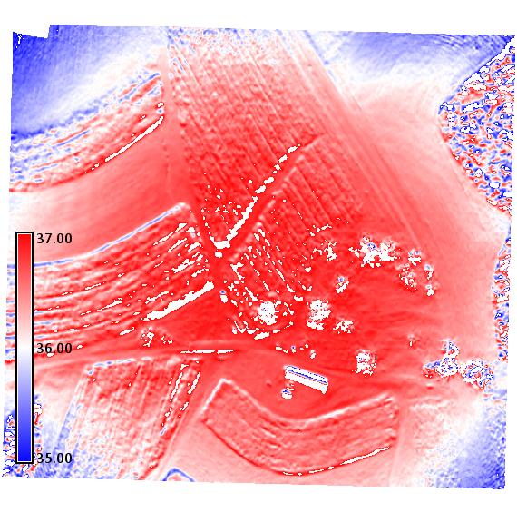
Difference between Agisoft DSMs with and without GCPs
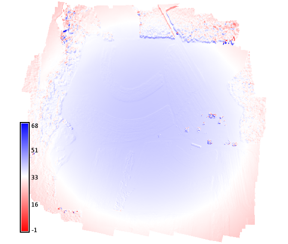
Difference between Pix4D DSMs with and without GCPs
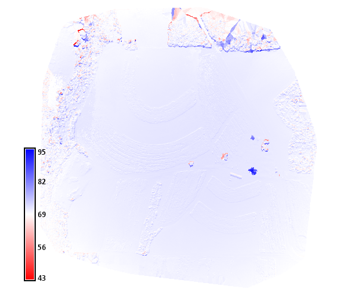
Scatterplot of sample DSMs with and without GCPs
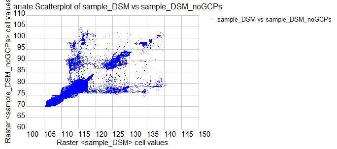
Scatterplot of Agisoft DSMs with and without GCPs
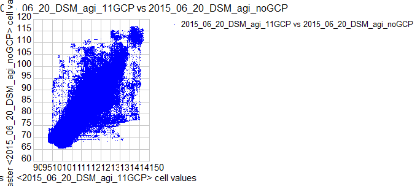
Scatterplot of Pix4D DSMs with and without GCPs
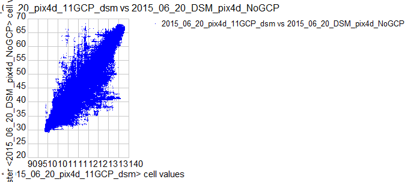
I also compared DSMs for the June flight computed in Trimble, Agisoft, and Pix4D. The Agisoft imagery has bowl-shaped distortion, while the Trimble imagery has linear distortion in roughly east-west bands.
Difference between Agisoft and Trimble
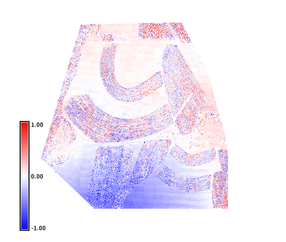
Difference between Pix4D and Agisoft
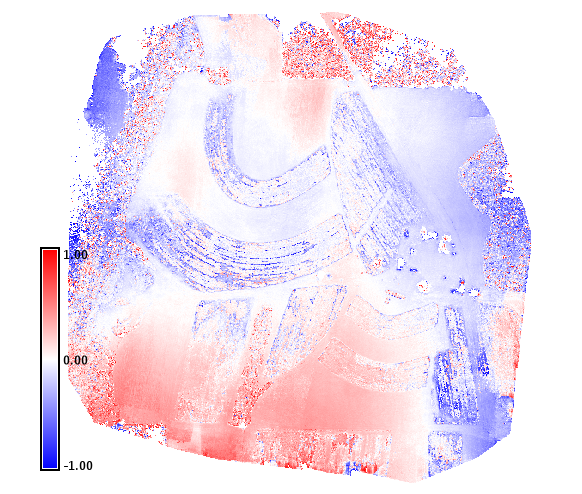
Difference between Pix4D and Trimble
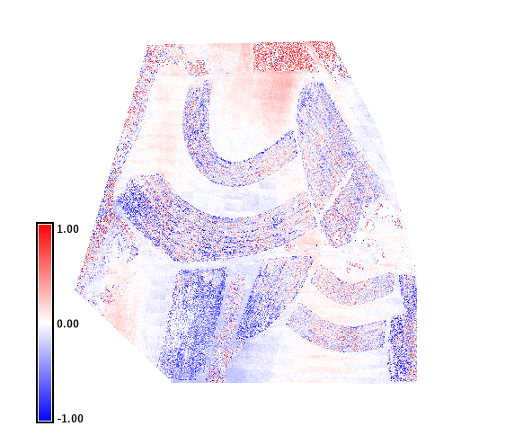
I analyzed the sample DSMs for artifacts using slope, aspect, relief, and principle component analysis. The GCPs appear to significantly alter complex high elevation microtopography such as the tree canopy.
PCA of DSM without GCPs
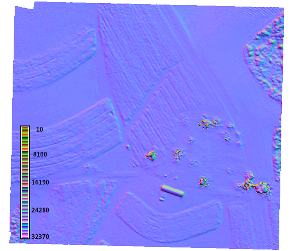
PCA of DSM with GCPs
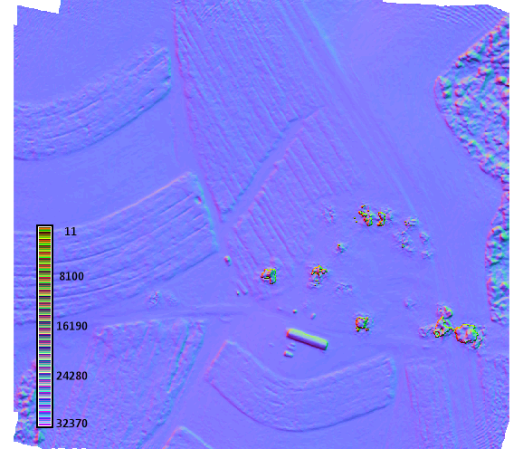
Finally, I compared the difference between the DSMs for June and October flights. Both were processed with Agisoft. This time series analysis clearly shows crop rotation. The corn fields were mowed (showing a subtraction) and the fallow fields were planted (showing an addition). While there is substantial noise due to distortion in the periphery, there appears to be a substantial overall decrease in the tree canopy as leaf-off begins.
The difference between the DSMs for the June and October flights
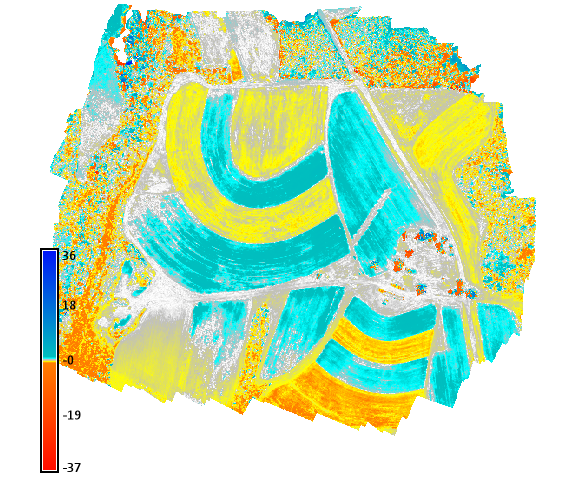